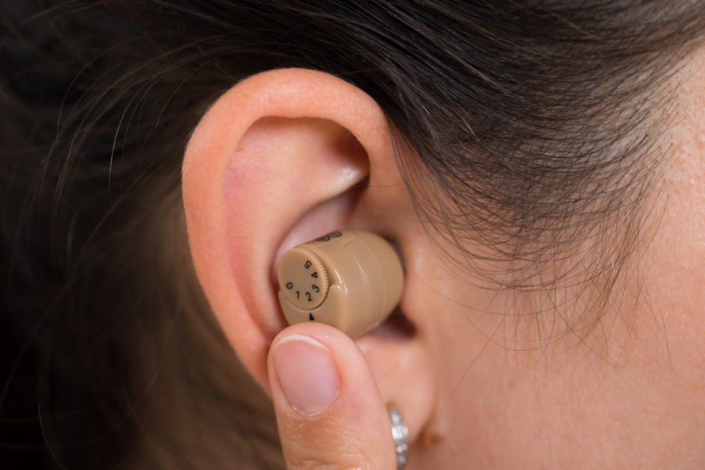

Who Needs Medigap Insurance?
If you already have Original Medicare, you may wonder if you really need Medigap insurance. As you get older, your income reduces, and most seniors rely on a limited monthly income.

Here’s Everything You Need To Know About Hearing Aids
While you might have heard a lot about hearing aids, you might be a little worried about whether it’ll really help and how it’ll look. Keep in mind that hearing aids can’t restore normal hearing.

Type 1 and Type 2 Diabetes: What’s the Difference?
Diabetes is a chronic disease that affects the way your body regulates blood sugar or glucose. Glucose feeds the body’s cells, but it needs insulin to enter the cells.

Here’s What You Need to Know About Hearing Aids
Hearing loss can derail your ability to function in your day to day life and affect your work, relationships, and sense of well-being. While usually caused due to aging, hearing loss can also be a result of disease, constant or sudden exposure to loud noises, or certain medications.